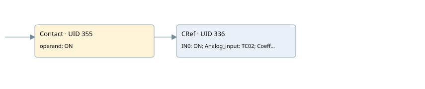

tc-02
analog input conversion · 검색 색인 순서 10 · 원본 내부 NID 추정 10
백업 PLF 원본의 3120820 바이트 위치에서 복원한 XML. 검색 문서 1740의 객체 키 16102200186b000000000000와 연결했다. 이름 해석 7/7개. 남은 RefId는 상수 또는 미해석 참조다.
연결 구조 다시 그리기
원본 Part/PCon/Wire를 이용한 연결도다. TIA 화면의 래더 배치 또는 실행 결과를 재현한 그림은 아니다. 핀 연결은 아래 표와 원본 XML을 기준으로 읽는다. 노드 위에 마우스를 두면 피연산자 이름을 볼 수 있다.

접점·코일·블록과 피연산자
| Part UID | Gate | Negated 핀 | 연결 피연산자 |
|---|---|---|---|
| 355 | Contact | operand = ON | |
| 336 | CRef | 호출 참조: Signal linearization; IN0 = ON; Analog_input = TC02; Coeff = Coeff.COEFF_TC02; Zero = Coeff.ZERO_TC02; OutValue = Data.Temp_TC02; Out_of_range = Allarm.TC02_OFR |
접점 경로를 펼친 조건식
Contact·O/A·비교기의 원본 연결을 읽기 쉽게 펼친 보조 해석이다. POWER는 전원 레일 시작을 뜻한다. 호출 블록·에지·타이머의 내부 동작과 다중 쓰기 순서는 이 표로 실행 검증하지 않았다. 미해석 핀과 RefId는 원문 연결표에서 확인한다.
| UID | 동작 | 대상 | 원본 접점 경로 | 내용 |
|---|
원본 배선 연결
| Wire UID | 동일 Wire 연결 끝점 |
|---|---|
| 357 | Powerrail {} ↔ Part 355.in |
| 349 | ORef 342 (ON) ↔ Part 355.operand |
| 356 | Part 355.out ↔ Part 336.en |
| 350 | ORef 343 (ON) ↔ Part 336.IN0 |
| 351 | ORef 344 (TC02) ↔ Part 336.Analog_input |
| 352 | ORef 345 (Coeff.COEFF_TC02) ↔ Part 336.Coeff |
| 353 | ORef 346 (Coeff.ZERO_TC02) ↔ Part 336.Zero |
| 354 | Part 336.OutValue ↔ ORef 347 (Data.Temp_TC02) |
| 24 | Part 336.Out_of_range ↔ ORef 23 (Allarm.TC02_OFR) |
식별자 해석 근거 7개
| ORef UID | RefId | 이름 | IdentXmlPart 파일 | 해석 방법 |
|---|---|---|---|---|
| 342 | 1 | ON | 0678-IdentXmlPart.xml | UID/RID + search-text + NID agreement |
| 343 | 1 | ON | 0678-IdentXmlPart.xml | UID/RID + search-text + NID agreement |
| 344 | 71 | TC02 | 0678-IdentXmlPart.xml | UID/RID + search-text + NID agreement |
| 345 | 72 | Coeff.COEFF_TC02 | 0676-IdentXmlPart.xml | UID/RID + search-text + NID agreement |
| 346 | 73 | Coeff.ZERO_TC02 | 0676-IdentXmlPart.xml | UID/RID + search-text + NID agreement |
| 347 | 74 | Data.Temp_TC02 | 0676-IdentXmlPart.xml | UID/RID + search-text + NID agreement |
| 23 | 375 | Allarm.TC02_OFR | 0676-IdentXmlPart.xml | UID/RID + search-text + NID agreement |
검색 코드 보조 자료
참조 명칭을 찾기 위한 자료이며 실행 순서나 AND/OR 관계는 위 연결표로 확인한다.
"on" "signal linearization" "on" "tc02":p "coeff".coeff_tc02 "coeff".zero_tc02 "data".temp_tc02 "allarm".tc02_ofr